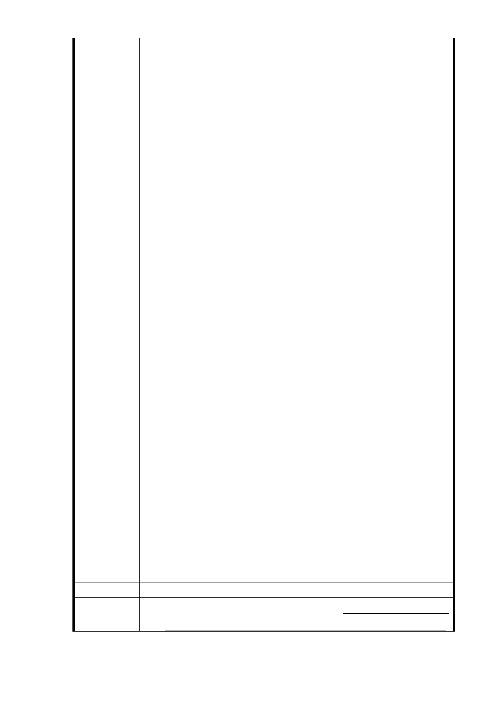

由之陳情說明：
四、今年八月一日，臺北市都市計畫委員會曾討論捷運信義
線東延段 R04 站北側因土地取得發生困難，只徵收松臺
公寓五樓之土地規劃為出入口，該五樓地主非常驚訝惶
恐失望無法接受，如不照原計畫全部松臺公寓建造共構
恐將發生抗爭，市政府想必亦不樂見。此陳情理由未獲
相關單位重視，視而不見，令人深感遺憾！
五、謹再補充建議：
1.陳情人民國 102 年 9 月 26 日陳情書（附件四）希望將
臺北市信義路六段捷運信義線東延段 R04 站土地比照信
義路捷運沿線捷運站土地，於都市計畫變更後訂定「細
部計畫」時，由「住三」改為「商三」，或增加容積率
一節，既與全市一致性不符，自當尊重公平原則原建議
願撤回。
2.如陳情書補充說明第二項第 2、3 款，捷運信義線東延
段 RO4 站圓滿完成基地無產權複雜問題，由地主與實施
者在反求諸己相互忍讓，讓無產權住戶分享部分開發之
利益（房屋與車位），業已有逾百分六十同意。祈請再
給與三個月時間來進行積極整合，以達到都更申請百分
之八十幾同意之門檻，呈請市政府核准同意與捷運局共
構大樓（含捷輝獎勵），併同都更計畫辦理銀行信託，
保障雙方重建都市景觀、美化居住環境，創造大眾福祉，
請臺北市政府公文通知自可依據迅速協調作業，儘快辦
理都更申請。
3.臺北市政府如大力協助捷運信義線東延段 R04 站共構
新穎大樓與徵收松臺公寓五樓用地或五樓旁巷道勉強興
建為出入口，如此重大建設變更原計畫，改善整體都市
景觀，兩相比較實有天壤之別，鄰近之居民很難認同。
欲藉此次重大建設而有割除都市沈疴毒癌之契機，一旦
錯失，日後再欲補救則機會不再，將永為都市景觀之痛。
4.臺北市為中華民國首都，亦為國際都市，土地寸土寸
金，用地取得發生困難應屬正常，有為的政府應當有克
服困難之勇氣與毅力來成全大局。
六、倘若於 103 年 5 月底前松臺公寓地主與住戶仍無法達成
共識則不再陳情，由政府權宜處理，謹此恭請裁示為禱！
建議辦法
市 府 回 應 一、有關建議將「住三」改為「商三」建議，本市住宅區變
意 見 更為商業區之案例，包括本府 84 年 9 月 27 日公告「修
- 62 -